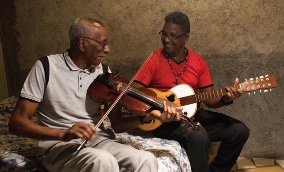
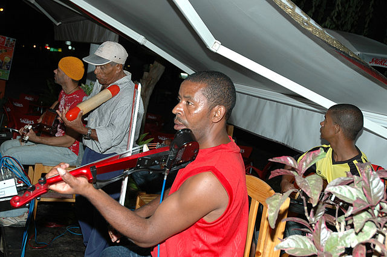
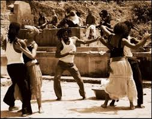
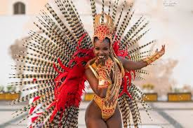
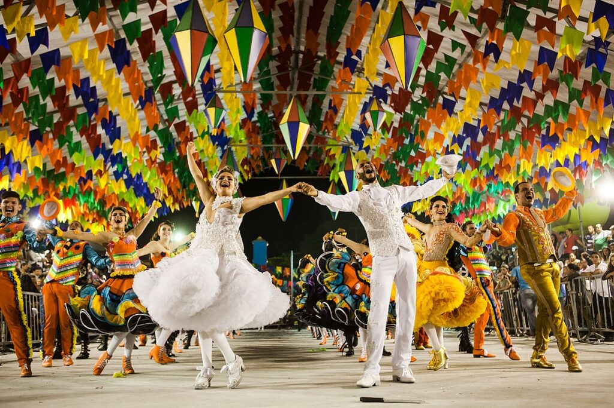

Morna
Gênero musical mais emblemático de Cabo Verde, conhecido por sua melodia suave e letras melancólicas. Cesária Évora ajudou a torná-lo famoso mundialmente.

Coladeira
Estilo musical mais animado e dançante, com ritmos acelerados e letras sobre o cotidiano e a alegria do povo cabo-verdiano.

Funaná
Ritmo acelerado e enérgico originado das zonas rurais de Cabo Verde, tocado com acordeão e o "ferrinho". Muito popular em festas.

A tabanka
Dança tradicional ligada às celebrações religiosas e festas populares, com forte influência africana e movimentos em círculo.

Carnaval de Mindelo
O maior evento cultural de Cabo Verde, comparado ao carnaval brasileiro, com desfiles coloridos, fantasias e muita música.

Festa de São João
Uma das festas mais importantes do país, comemorada com fogueiras, danças e muita música, especialmente na ilha de São Vicente.


.jpg )